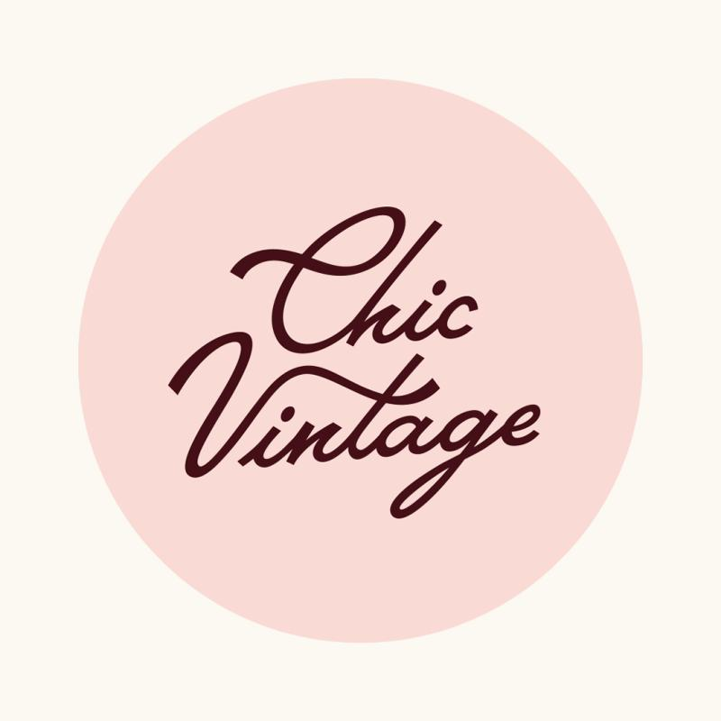

Chic Vintage Business Analysis
A partnership with Chic Vintage, a women-owned vintage resale shop in Knoxville, to analyze four months of sales data (March–June) and turn raw Lightspeed exports into actionable business insights.
Python
pandas
SQLite
Tableau
Claude Code
View project details
- $59K+ in revenue across 884 transactions — with clear revenue spikes tied to local events like the Big Ears Festival and Mother's Day weekend
- Multi-item baskets drove 198% higher order value than single-item purchases ($102 vs. $34 AOV)
- Top 10 brands accounted for 47.7% of revenue — informing a data-driven brand scorecard
- A targeted Wednesday discount analysis, surfacing ways to protect margin while still driving traffic
The process included cleaning messy retail data (typos, inconsistent naming) using Python and pandas, constructing a SQLite database for querying, and visualizing findings in Tableau — then translating it all into prioritized, low-cost recommendations the owners could act on immediately.